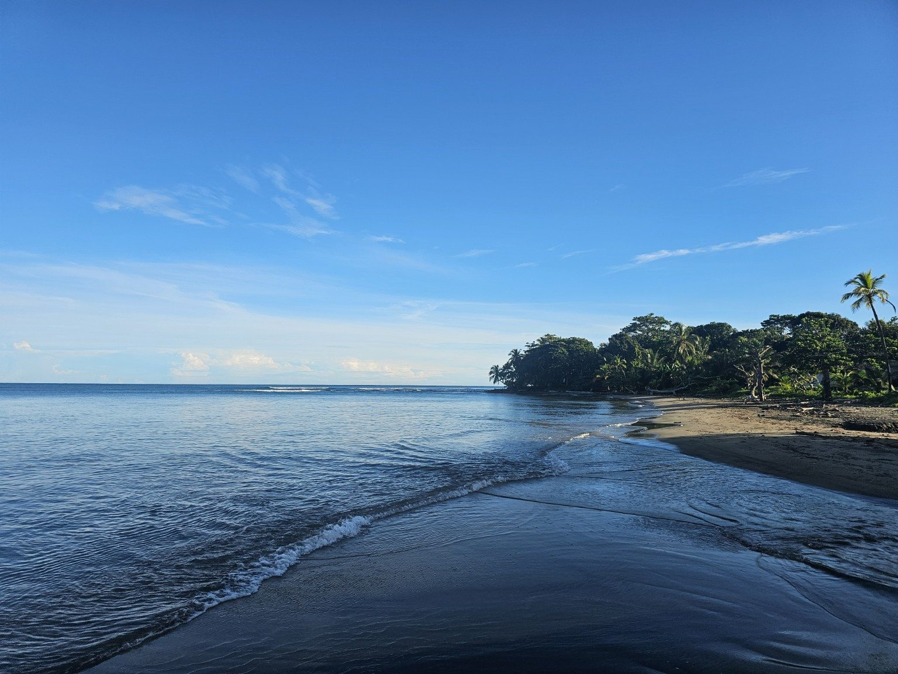
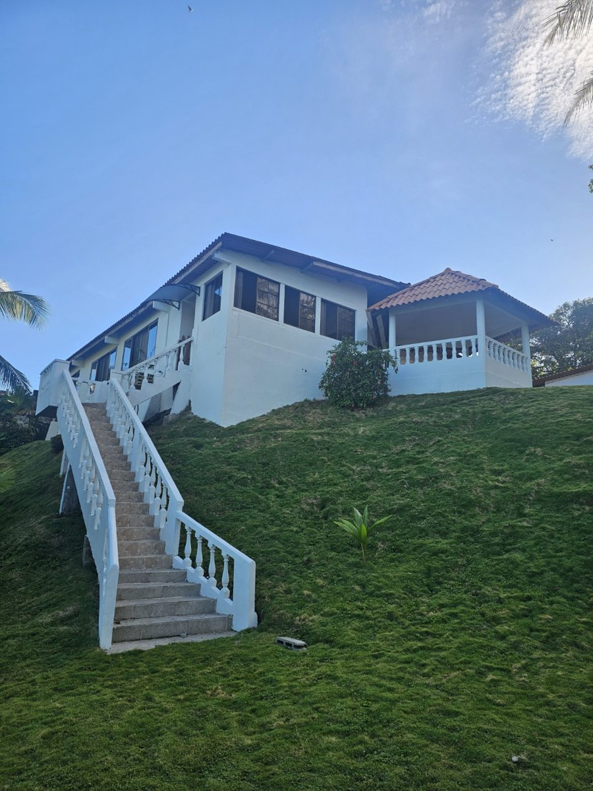
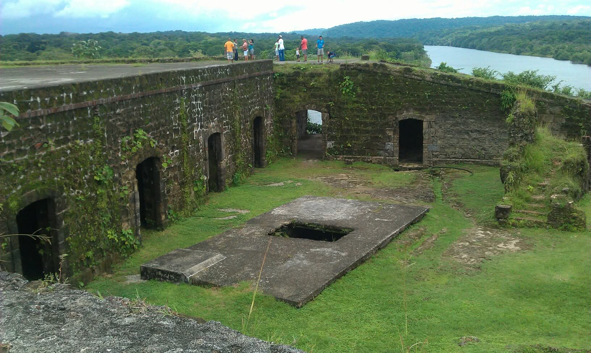

🍤
Menú en preparación
Nuestro kiosco
Sabores típicos, comidas frente al mar y bebidas refrescantes. Muy pronto compartiremos nuestro menú.
Consultar →Descubre la magia de Costa Abajo de Colón con E&F PTY: buena comida, momentos frente al mar y experiencias para recordar.
Un rincón caribeño para disfrutar con amigos y familia. La disponibilidad de cada servicio se confirmará antes de reservar.
Sabores típicos, comidas frente al mar y bebidas refrescantes. Muy pronto compartiremos nuestro menú.
Consultar →Ideas para disfrutar el día: sillas, sombrillas, juegos y actividades recreativas según disponibilidad.
Consultar →Descubre la costa, sus paisajes, playas e historia mediante excursiones privadas coordinadas.
Conocer excursiones →Escápate de la ciudad y descubre la belleza de la costa caribeña de Colón. Estamos organizando excursiones privadas para grupos pequeños, con transporte coordinado y experiencias adaptadas a cada grupo.
Rutas, disponibilidad, transporte, guía y precio se confirman antes de cada reserva. Fotografías reales de Costa Abajo.
Solicitar información →Una experiencia privada en preparación, con playa, sabores costeños y una visita histórica.

Disfruta de la costa y sus paisajes naturales en un ambiente relajado.

Pescado frito preparado en familia, con arroz con coco y acompañamientos típicos, servido en nuestro bohío.

Visita histórica prevista para el regreso, sujeta a horarios de acceso y disponibilidad.
Itinerario sujeto a confirmación. Los precios, transporte y fechas se cotizan individualmente.
E&F PTY nace con una idea sencilla: reunir gastronomía, playa y turismo bajo una misma marca, con Punta del Medio, en Costa Abajo de Colón, como nuestro punto de referencia.